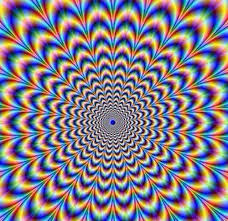
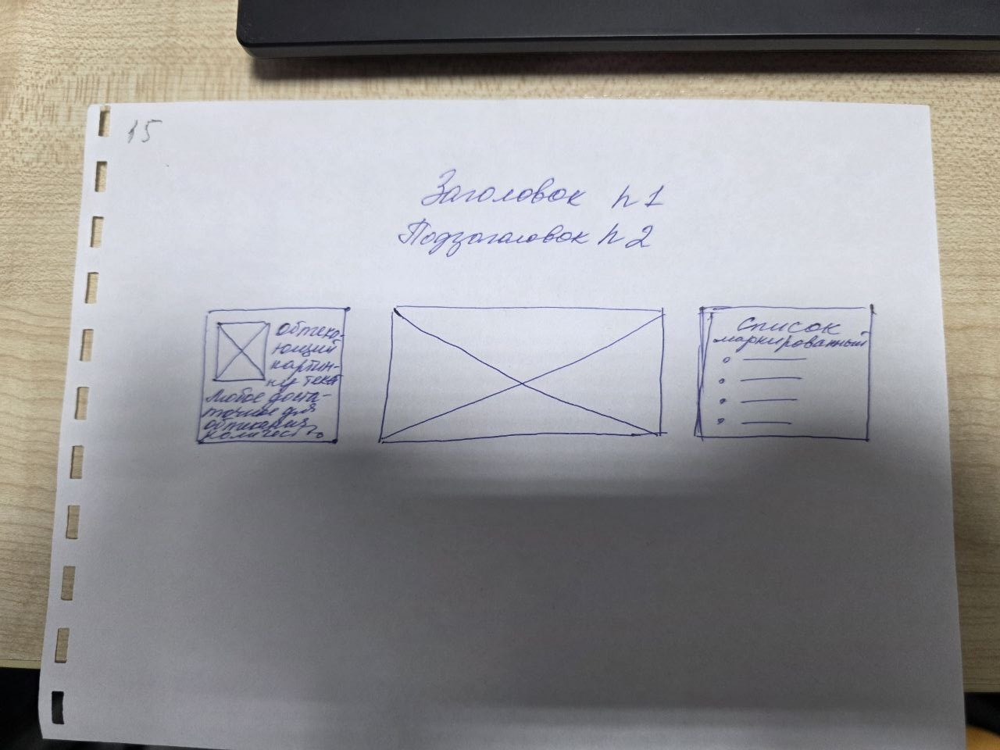

В смысловой цельности текста отражаются те связи и зависимости, которые имеются в самой действительности (общественные события, явления природы, человек, его внешний облик и внутренний мир, предметы неживой природы и т. д.). Единство предмета речи — это тема высказывания. Тема — это смысловое ядро текста, конденсированное и обобщённое содержание текста. Понятие «содержание высказывания» связано с категорией информативности речи и присуще только тексту. Оно сообщает читателю индивидуально-авторское понимание отношений между явлениями, их значимости во всех сферах придают ему смысловую цельность. В большом тексте ведущая тема распадается на ряд составляющих подтем; подтемы членятся на более дробные, на абзацы (микротемы).
